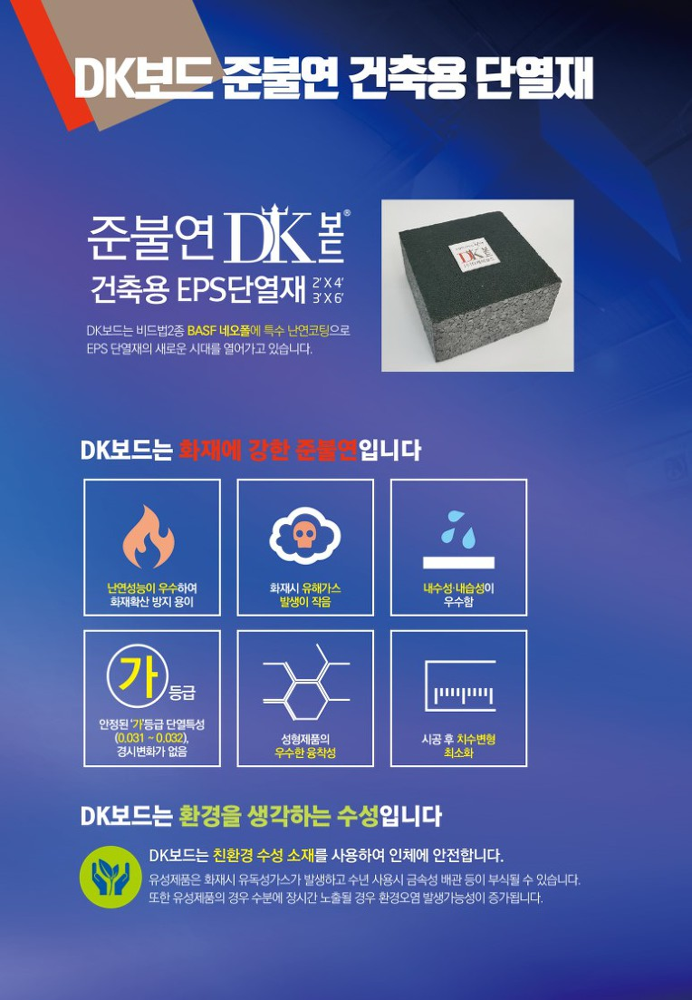

DK보드
준불연 가등급 EPS 건축용 단열재 (2'X4', 3'X6')
DK보드는 비드법2종 BASF 네오폴에 특수 난연코팅으로
EPS 단열재의 새로운 시대를 열어가고 있습니다.
화재에 강한 준불연, DK보드
· 난연성능이 우수하여 화재확산 방지 용이
· 화재시 유해가스 발생이 작음
· 내수성·내습성이 우수함
· 안정된 ‘가’등급 단열특성(0.031 ~ 0.032), 경시변화가 없음
· 성형제품의 우수한 융착성
· 시공 후 치수변형 최소화
환경을 생각하는 수성, DK보드
DK보드는 친환경 수성 소재를 사용하여 인체에 안전합니다.
유성제품은 화재시 유독성가스가 발생하고 수년 사용시 금속성 배관 등이 부식될 수 있습니다 .
또한 유성제품의 경우 수분에 장시간 노출될 경우 환경오염 발생가능성이 증가됩니다.
|주|디케이보드 1855-2240
! DK보드, 디케이보드, DKboard는 준불연 EPS 건축용 마감재(단열재, 판넬)로 등록된 상표입니다.